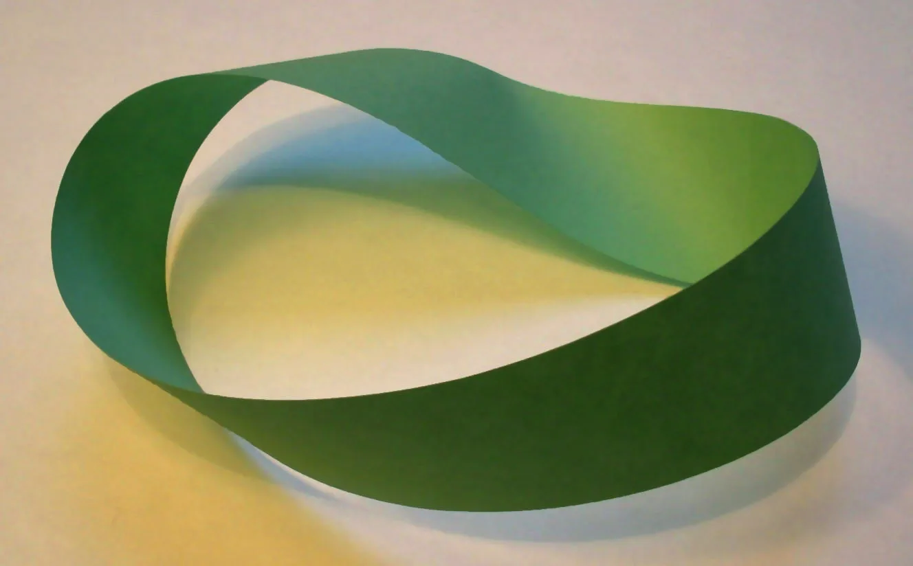

The full title is Clowns and Mimes, on Miscellaneous Topological Spaces... IN THE DARK. It is a team tag game for 4 to 16 players, humans and bots. Every player is either a mime or a clown. Turns alternate between the teams; whoever holds the turn freezes opponents by running into them or hitting them with a freeze shot, and frozen players stay frozen until a teammate touches them. A team wins when every opponent is frozen. The arena is a labyrinth, the labyrinth is barely lit, and the surface it is built on is chosen from a short list of quotient spaces.
The client is a native desktop build: Godot 4 in GDScript, shipped as installers for Windows, macOS, and Linux. Matchmaking and match simulation run on Cloudflare Workers and Durable Objects in TypeScript, one Durable Object per room, ticking at 60 Hz. The project is pre-alpha and being built in public.
Four ground surfaces
The playing field is a flat XZ plane with topology-specific wrap rules applied after every physics step, which buys the gameplay of a curved surface without rendering one. A host picks from four options. The plane is a plain 80×80 square with boundary walls. The torus takes the same square and identifies opposite edges, so both coordinates wrap modulo the world width \(W\): walk off the east edge and you arrive at the west edge, no walls needed. The Klein bottle uses the textbook identification \((x, z) \sim (x + W, -z)\) with \(z\) also periodic; the Möbius strip uses the same orientation-reversing x-identification but hard-bounds \(z\), since the strip has a boundary.

{kind=link}
Each surface is a small adapter class exposing wrap, distance, and delta. Distance is the shortest path under the identification, not the Euclidean one, and everything downstream uses it: the server's tag check measures topology-aware distance, so a tag can land across a seam, and bot steering uses the wrapped delta so a bot near a seam chases the short way around instead of zigzagging back across the whole arena.
The double cover
The non-orientable surfaces have a rendering problem. Applying the Klein bottle's z-flip live at the seam means walls jump and the camera mirrors the instant you cross \(x = \pm W/2\). Instead, the game renders the orientation double cover: a \(2W \times W\) torus whose right half is the z-mirror of the left half. The flip is baked into the geometry rather than the wrap rule, so every seam crossing is a plain modular translation and the walls stay continuous. Walking the long way around the cover visits both sides of the underlying bottle. The Möbius strip gets the identical treatment as a cylindrical double cover, 160 units around and 40 tall, with the strip's single boundary loop becoming the cylinder's top and bottom walls. The same trick is used twice because the two surfaces differ only in whether \(z\) wraps.

{kind=link}
The minimap folds the cover back down. A player standing on the mirrored half renders as a dimmed dot at the z-flipped position, and crossing the fold reads as the dot hopping the map edge with its facing mirrored.
One maze, two runtimes
The labyrinth is a spanning tree carved over a 10×10 grid of cells by seeded iterative depth-first search, followed by a braiding pass that knocks a wall out of every dead end so the maze has loops. The neighbor function is where the topology lives: on the torus, cells wrap across both seams; on the Klein bottle, crossing the x-seam flips the row index; on the plane, out-of-bounds is solid. Wall segments that land on a wrap seam are dropped, because the identification folds both edges onto the same line and the wall would double up.
The generator is implemented twice, in GDScript for the client and TypeScript for the server, mirrored bit for bit: the same 32-bit linear congruential generator, the same fixed neighbor-traversal order. Both sides derive the wall list from the room seed alone, so the client bakes its meshes and the server runs collision and line-of-sight on identical geometry without ever sending mesh data. For the Klein bottle the generator first carves the fundamental 10×10 maze with the flip-row wrap, then unfolds it into the 20×10 cover, mirroring each cell's opening mask and swapping its north and south bits. The DFS has to run on the fundamental domain with the flip in its wrap rule: carve the cover with plain modular wraps instead and the openings at the middle seam land on mismatched rows, and the two halves can come out as unreachable islands.
In the dark
The arena's ambient light is turned down to almost nothing and volumetric fog carries its own emission to shorten sight lines further. What lighting exists is doing gameplay work: LED strips at the base of every wall glow in the active turn's team tint, warm for clowns and cool for mimes, so whose turn it is reads at a glance from anywhere in the maze. Bots are subject to the same darkness in spirit: their vision is gated by a distance threshold and a wall line-of-sight test, and a chasing bot that loses its target routes to the last seen position for three seconds before giving up. A radar power-up briefly reveals the enemy team on the minimap; a cloak hides your body from other clients for four seconds.
The server holds the whistle
Every freeze is decided by the Durable Object. A tag attempt is validated against the full rule list: correct turn phase, attacker not frozen, victim not just unfrozen, topology-aware distance under the contact radius, no wall crossing the line between the two players, and vertical overlap, so a well-timed jump literally puts you out of reach. Movement is client-predicted with full-replay reconciliation: the client replays its unacknowledged inputs from each authoritative snapshot through the same shared movement step the server runs. Remote players render at the wrap-equivalent position nearest the local camera, so an opponent crossing a seam appears at the continuation you can see rather than teleporting a world-width away. On a torus, someone is always closer than they appear.